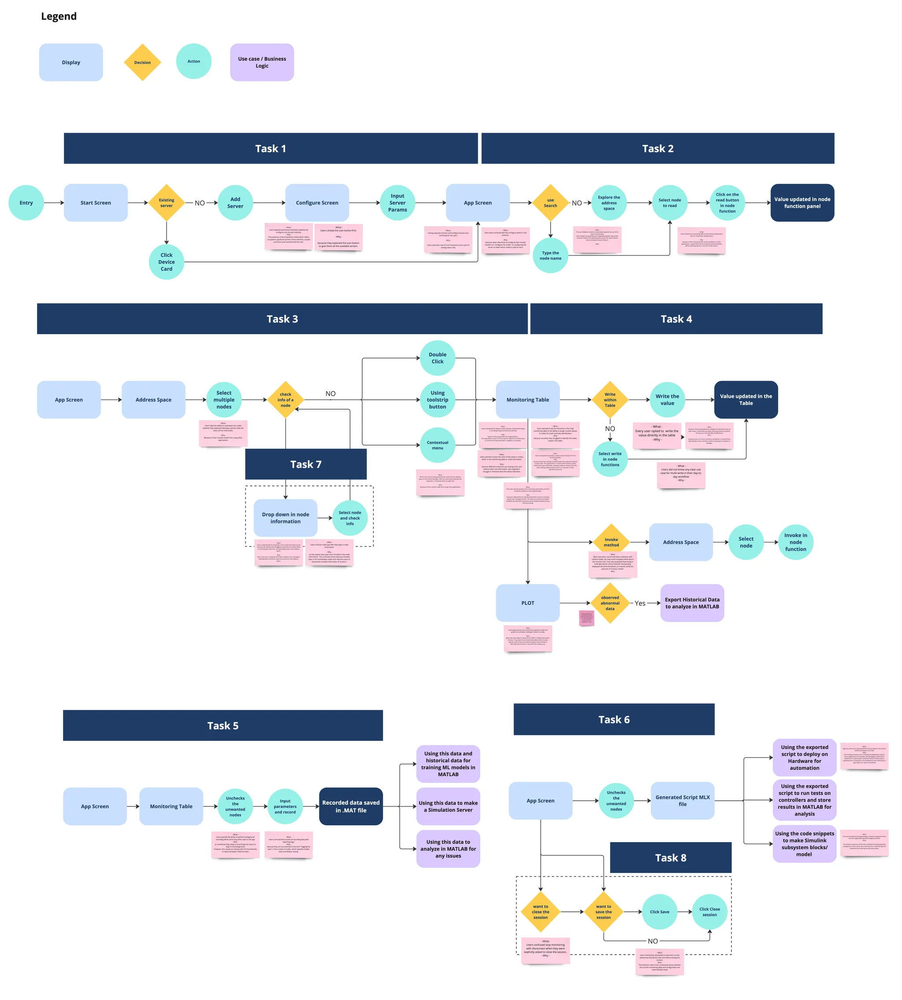

To comply with my non-disclosure agreement, I have omitted and obfuscated confidential information in this case study. All information in this case study is my own and does not necessarily reflect the views of MathWorks.
Executive Summary
Our project is structured into two key phases to ensure a user-centric approach and effective product development.
Phase 1: Requirements Gathering In this phase, we focused on establishing comprehensive requirements by engaging in contextual inquiries with five participants. This involved identifying user roles, goals, workflows, and pain points to create a detailed requirements document. The users, from diverse domains such as the process sector, research and development, and Manufacturing Analytics as a Service, provided insights into developing applications that communicate with DCS/SCADA systems, model-based engineering, and OPC-UA communication protocol integration.
Phase 2: Usability Testing Following the requirements gathering, we moved into usability testing of the newly designed application. This phase involved an additional set of five users to evaluate the effectiveness and user-friendliness of the application. The insights gained from this testing were instrumental in refining the product to better meet user expectations and enhance overall usability.
Together, these phases have positioned us to deliver a robust, user-focused application, with a tentative rollout planned for July 2025.
1. Introduction
Industrial Communication Toolbox
by MathWorks provides access to live and historical industrial plant data directly from MATLAB and Simulink. You can read, write, and log OPC Unified Architecture (UA) data from devices such as distributed control systems, supervisory control and data acquisition systems, and programmable logic controllers. You can also access plant and manufacturing data directly from AVEVA PI System, and use this data for process monitoring, process improvement, and predictive maintenance applications.
1.1 What is OPC UA?
OPC Unified Architecture (OPC UA) is an industrial communication standard developed by the
OPC Foundation
. OPC is vendor independent and supports all major industrial automation platforms.
OPC UA is a data exchange standard for safe, reliable, manufacturer-independent, and platform-independent industrial communication. It enables secure data exchange between hardware platforms from different vendors and across operating systems.
1.2 The challenge
Currently, we support basic APIs for OPC UA usage in MATLAB. With the deprecation of the OPC DA toolbox, we are challenged to innovate and enhance our support for OPC UA, the new industry standard. While third-party solutions exist, our goal is to leverage the MathWorks ecosystem to deliver a unique OPC UA experience by integrating MATLAB's powerful analytics and simulation capabilities. This involves designing a tool that excels in ease-of-use and functionality, and rigorously testing it with users to ensure its effectiveness before development and public release.
2. Research Questions
Phase 1
Phase 2
User Roles and Goals: What are the roles and goals of the OPC UA client users?
User Challenges: What frequent obstacles do users encounter, and what alternative solutions or workarounds do they employ?
User Workflow: What does the current workflow look like for users interacting with OPC UA clients, including activities before and after the main workflow?
Technical Assessment: What are the technical specifications and performance criteria necessary for the client application?
Comprehension: How effectively do users understand and navigate the app's interface and functionalities?
Usefulness: How well does the app meet users' needs to support their workflows effectively?
Intuitiveness: How naturally and seamlessly do users interact with the app's features and do the interface elements and flows align with their expectations and mental models?
Affordance: How effectively do the interface elements communicate their functionality and expected outcomes to users?
Discoverability: How easily can users locate and access the app's key features and functionalities without prior instruction or guidance?
3. UX Process and My Contribution
As a UX Researcher, I led the research and testing phases of the OPC UA client app project. My responsibilities included:
3.1 Phase 1 : Requirements - 6 weeks
Research Preparation: Developed a comprehensive research plan with clearly defined objectives to guide the initial phase of the project.
Secondary Research: Conducted an extensive review of existing resources, including OPC conference materials, feature requests, and documented customer workflows. This research provided a foundational understanding of current market offerings and user needs.
Benchmarking: Analyzed existing OPC UA client solutions available in the market to identify best practices, common features, and potential gaps. This benchmarking exercise informed the development of unique value propositions for our application.
Fig: Benchmarking existing OPC UA Client Solution
Contextual Inquiry Preparation: Developed a detailed script for conducting contextual inquiries.
Conducting User Interviews: Conducted five in-depth user interviews to gather qualitative data on user roles, goals, and workflows. These interviews provided critical insights into user needs and challenges.
Data Affinitization and Requirements Documentation: Utilized Miro to organize and affinitize the data gathered from interviews, clustering information to identify patterns and themes. This process led to the creation of a comprehensive requirements document, capturing user roles, goals, workflows, and pain points, which served as a foundational reference for the development team.
Fig: Snapshot of insights on miro boardFig: User roles and goals table
Collaborative Requirements Drafting: Engaged in a team activity with developers to draft and prioritize requirements. This process involved evaluating the severity of identified pain points and considering technical feasibility to ensure a balanced and actionable set of priorities.
Fig: User workflow, pain-point and requirements table
Workshop Facilitation: Participated as an expert in a brainstorming workshop aimed at generating potential solutions and identifying areas of intervention. Provided context and insights from the research phase to assist participants, including designers, researchers, and developers, in understanding the problem space and user pain points.
Design Review Support: Collaborated with the designer to present findings and research-backed decisions during design review forums. This involved explaining the rationale behind certain design choices and ensuring alignment with user needs and project objectives.
3.2 Phase 2 : Usability Testing - 6 weeks
Research Preparation: Feedback and puzzles from previous (App and Hardware) design reviews were collated, which helped in the formulation of the research questions for the identified app workflow. Over 50 specific research questions were generated, which were then prioritized to identify 20 high-priority questions. These were subsequently themed to develop 5 high-level research questions.
Research Planning: A detailed research plan was developed, including the creation of tasks and a script to guide the sessions.
Conducting Interviews: Five interviews were conducted.
Data Analysis: The session data was analyzed by clustering and categorizing the findings, which were then themed to develop insights in Miro.
Fig: Affinitization of data and insights writing

Fig: Userflow and identified Painpoints
Report Creation: A detailed report was created, which included video clips highlighting the main high-level insights. Additionally, all the findings in the identified workflow, along with a map and feature requests, was captured in the report.
Fig: Insights Table Screenshot
Contextual Inquiry: Contextual inquiries were performed on the use cases of OPC UA. These insights were captured in both the report and on Miro.
3.3 Some insights from Usability study
The current user interface terminology can lead to confusion: Users struggle to differentiate between similar concepts such as Configure with adding nodes to the table, "Logging the data" with saving/ recording the data.
It is difficult to associate the nodes: In the monitoring table and drop down in node information with their corresponding hierarchy in the address space.
For basic read and write operations: Users do not prefer the node functions panel. However, they expect a safeguard mechanism to prevent erroneous or harmful data modifications.
To support use cases for monitoring and exploring the nodes: We will need to provide additional functionality, such as unit information, the quality of incoming data, and sampling frequency.
4. Impact
The study enabled us to establish clear requirements at an early stage, significantly reducing the time and iterations typically needed to refine product specifications—potentially saving multiple 6-month release cycles. By focusing on user-centric design, we developed a product that effectively meets user needs, supported by several rounds of internal design reviews and externally validated usability studies. This approach ensured a well-informed, user-driven development process, enhancing the product's relevance and usability from the outset.
The application is tentatively planned for rollout in July 2025, aligning with our strategic timeline for delivering impactful solutions to our users.